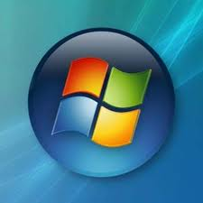
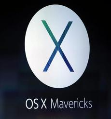
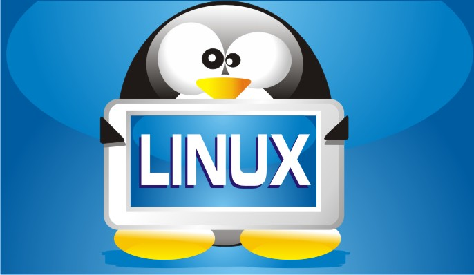

| Nome del sistema | Logo del sistema | Descrizione sistema |
| Windows |  | Microsoft Windows (abbreviazioni comunemente utilizzate: "Windows" o "Win") è una famiglia di ambienti operativi e sistemi operativi dedicati ai personal computer, alle workstation, ai server e agli smartphone. Il sistema operativo si chiama così per via della sua interfaccia di programmazione a finestre (dette windows in lingua inglese). In particolare Microsoft Windows nasce come ambiente operativo per i sistemi operativi MS-DOS e PC DOS (dedicati ai personal computer), e diventa sistema operativo con Windows NT (dedicato alle workstation e ai server) e Windows 95 (dedicato ai personal computer). E' software proprietario della Microsoft Corporation che lo rende disponibile esclusivamente a pagamento. In particolare attualmente Microsoft Corporation commercializza solo sistemi operativi appartenenti alla famiglia Microsoft Windows: Windows 8.1 per i personal computer e le workstation, Windows Server 2012 per i server, Windows Phone per gli smartphone, e Windows CE per i Pocket PC e i Portable Media Center. |
| Osx |  | OS X (pronunciato in inglese /oʊ ɛs tɛn/), precedentemente noto come Mac OS X (/mek oʊ ɛs tɛn/) è il sistema operativo sviluppato da Apple Inc. per i computer Macintosh, nato nel 2001 per combinare le note caratteristiche dell'interfaccia utente del Mac OS classico con l'architettura di un sistema operativo di derivazione UNIX della famiglia BSD. Nonostante il nome utilizzato sino alla versione 10.7.5, Mac OS X è un'altra versione rispetto a Mac OS nato nel 1984 con i primi computer Apple: venne completamente riscritto ed è di fatto un sistema operativo differente, di tipo UNIX certificato IEEE compliant al 100% con lo standard POSIX. Apple ha rilasciato il codice sorgente del kernel del sistema con licenza open source. |
| Linux |  | Linux (/ˈlinuks/, pronuncia inglese [ˈlɪnʊks]) è una famiglia di sistemi operativi di tipo Unix-like, rilasciati sotto varie possibili distribuzioni, aventi la caratteristica comune di utilizzare come nucleo il kernel Linux. Il suo sviluppo è sostenuto dalla Linux Foundation, un'associazione senza fini di lucro nata nel 2007 dalla fusione di Free Standards Group e Open Source Development Labs.Oggi molte società importanti nel campo dell'informatica come IBM, Sun Microsystems, Hewlett-Packard, Red Hat, Canonical e Novell hanno infatti sviluppato e rilasciato, e continuano a farlo, sistemi Linux. |